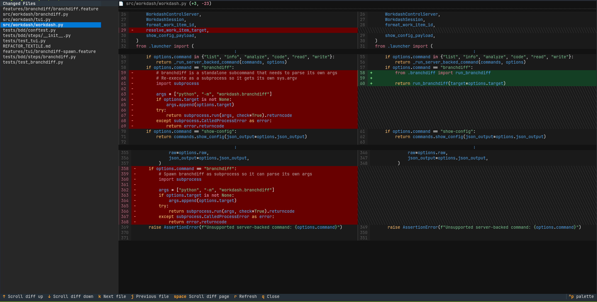

v Read the pull request
Press v twice to read the description and review discussion in the terminal.
Review together
Review the code yourself and ask an agent what you might have missed. You still decide what’s ready to ship.
See how you review a change ↓You know the intent. Does the change solve the right problem and fit the codebase?
Your agent looks for what you missed. Ask it to inspect the diff for bugs and edge cases before you decide.
Review requests show up as RV next to the rest of your work. Get the intent before you get into the diff.
Press v twice to read the description and review discussion in the terminal.
Have your chosen agent read the description, comments, and reviews. Return to the cached briefing until the PR updates.
Press c, then d to open the branch diff. Pick a file and compare the old and new code side by side.

Use your agent’s findings to guide a closer look. Keep your judgment at the center of the review.
workdash review ITEM from your terminal.Address the feedback, resolve the relevant threads, and ask the reviewer for another look. For work you delegate, the dispatch loop can pick up actionable feedback on a linked PR.
Already in a checkout? Find its pull request and linked issues from the terminal.